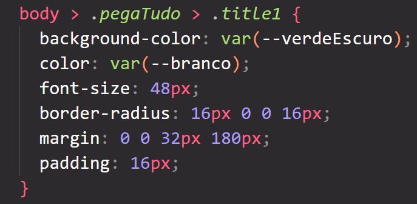
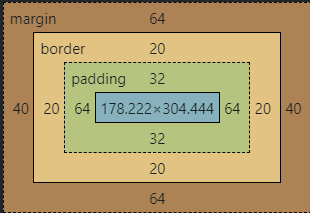
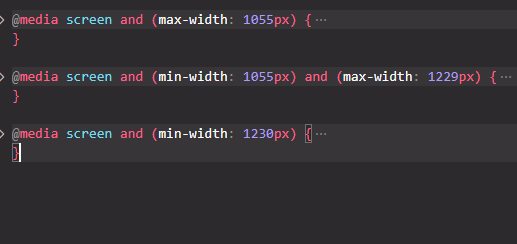

Resumo aula 4
Seletores em CSS
São padrões usados para selecionar os elementos (tags) HTML aos quais você deseja aplicar estilos.
Eles são chamados DENTRO da tag html
Temos o "class" que sua sintaxe é: < tag class="xxx">
< /tag>. Para chamar ele no CSS usamos o ".class"
Temos também o "id" que sua sintaxe é: < tag id="xxx">
< /tag>. Para chamar ele no CSS usamos o "#id"
Propriedades
Temos o "background-color" para mudar a cor do fundo, o "color"
para mudar as
cores das letras, o "font size" para alterar o tamanho das letras, a
"margin" para espaçamentos
EXTERNOS e o "padding" para espaçamentos INTERNOS
Você sempre vai ver o HTML e o CSS andando lado a lado.

Resumo aula 5
Box Model
Cada elemento HTML é considerado uma caixa retangular, e essa caixa pode ser dividida em
quatro áreas principais: conteúdo, preenchimento, borda e margem.
Conteúdo
O conteúdo da caixa é a área onde o conteúdo real do elemento, como texto,
imagens ou outros
elementos HTML, é exibido. É a parte interna da caixa onde o conteúdo é inserido.
Preenchimento
O preenchimento da caixa é uma área transparente ao redor do conteúdo dentro da
borda. Ele cria
espaço entre o conteúdo e a borda da caixa. O preenchimento é útil para adicionar espaço entre o
conteúdo e a borda, melhorando a legibilidade e a estética do elemento.
Borda
A borda da caixa é uma linha que envolve o conteúdo e o preenchimento. Ela define o
limite externo
do elemento e pode ter um estilo, largura e cor definidos por CSS. A borda é opcional e pode ser
omitida se não for necessária.
Margem
A margem da caixa é uma área transparente ao redor da borda externa da caixa. Ela
cria espaço
entre a borda do elemento e outros elementos vizinhos na página. A margem é útil para controlar o
espaçamento entre os elementos e criar layouts visualmente agradáveis.

Resumo aula 6
Media queries
Media queries são um recurso do CSS que permite adaptar o estilo de uma página com base no
dispositivo do usuário.
Com media queries, você pode definir diferentes estilos CSS para diferentes condições. Por
exemplo, você pode ter um estilo para telas grandes de desktop e outro estilo para telas menores de
dispositivos móveis.
Breakpoints
Breakpoints são pontos específicos de largura da tela em que o layout de uma página é ajustado
para garantir uma experiência de usuário adequada.
Eles são usados em conjunto com media queries. Você define breakpoints em larguras de tela
específicas e, em seguida, usa media queries para aplicar estilos diferentes quando a largura da
tela atinge esses pontos.
Imagens Responsivas
Para fazer a imagem se adaptar ao site é muito simples, basta colocar o width dela como 100% e
dessa forma ela vai ocupar todo o espaço disponível e se o usuário tiver uma tela menor a imagem vai
se adaptar para a tela dele.
Eles são usados em conjunto com media queries. Você define breakpoints em larguras de tela
específicas e, em seguida, usa media queries para aplicar estilos diferentes quando a largura da
tela atinge esses pontos.


Media queries
Media queries são um recurso do CSS que permite adaptar o estilo de uma página com base no
dispositivo do usuário.
Com media queries, você pode definir diferentes estilos CSS para diferentes condições. Por
exemplo, você pode ter um estilo para telas grandes de desktop e outro estilo para telas menores de
dispositivos móveis.
Breakpoints
Breakpoints são pontos específicos de largura da tela em que o layout de uma página é ajustado
para garantir uma experiência de usuário adequada.
Eles são usados em conjunto com media queries. Você define breakpoints em larguras de tela
específicas e, em seguida, usa media queries para aplicar estilos diferentes quando a largura da
tela atinge esses pontos.
Imagens Responsivas
Para fazer a imagem se adaptar ao site é muito simples, basta colocar o width dela como 100% e
dessa forma ela vai ocupar todo o espaço disponível e se o usuário tiver uma tela menor a imagem vai
se adaptar para a tela dele.
Eles são usados em conjunto com media queries. Você define breakpoints em larguras de tela
específicas e, em seguida, usa media queries para aplicar estilos diferentes quando a largura da
tela atinge esses pontos.